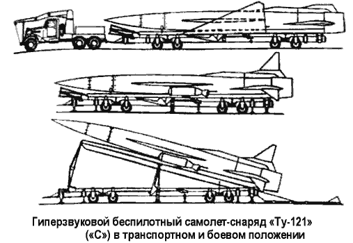
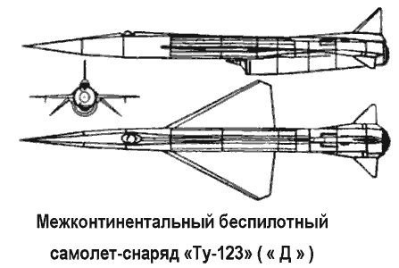

Самолеты-снаряды «Ту-121» («С») «Ту-123» («Д»)
В 1956 году в ОКБ-156 Туполева было создано новое подразделение «Отдел К», задачей которого была разработка беспилотных летательных аппаратов различного назначения. Постепенно это новое подразделение превратилось в полноценное конструкторское бюро. Его возглавил сам Андрей Туполев.
Одним из основных направлений работ «Отдела К» стало создание целой серии проектов беспилотных самолетов различного назначения, рассчитанных на крейсерские сверхзвуковые скорости, соответствующие 2,5 или 3 Махам, и обеспечивающих дальность полета в пределах от 3000 до 5000 километров.
Первым в длинном ряду был проект беспилотного ударного самолета «121» («Ту-121», «С»), предназначавшийся для поражения целей на дальностях до 4000 километров. Впервые в практике ОКБ конструкторам предстояло создать не только летательный аппарат со сверхзвуковой крейсерской скоростью полета, но и наземные стартовые средства к нему, а также контрольно-проверочный комплекс, обеспечиваюший подготовку и запуск.
Официально задание на проектирование самолета «С» («С» означает «Средний») ОКБ-156 получило в 1957 году. 23 сентября 1957 года вышло постановление Совета Министров № 1145-519 по разработке новой стратегической ударной системы на основе беспилотного самолета «С» (обозначение по КБ — «Ту-121»). К работам по различным элементам системы привлекалось большое количества предприятий и организаций авиационной, радиоэлектронной промышленности и других смежных отраслей военно-промышленного комплекса. Например, специально для «Ту-121» в ОКБ-300 Сергея Туманского создавался новый малоресурсный турбореактивный двигатель «КР-15-300» с длительной тягой на форсажном режиме 10 000 килограммов.
Для обеспечения эффективной работы ТРД на всех режимах полета отделом силовых установок КБ был спроектирован многорежимный подфюзеляжный воздухозаборник с многоскачковым полуконусным центральным телом, с системой слива пограничного слоя и отстреливавшимся ограничительным коллектором, оптимизировавшим работу двигателя и воздухозаборника, а также кольцевое эжекторное сопло. Для топливной системы были разработаны жесткие интегральные фюзеляжные баки-отсеки с надежной комбнированной системой герметизации.
Для беспилотного самолета проектировалась новая компактная ядерная боевая часть, полностью интегрированная с его системами. Система управления должна была быть автономной, программной, с возможностью использования астроинерциальной коррекции на маршруте полета к цели.
Для управления рулевыми поверхностями были созданы оригинальные теплоустойчивые компактные гидравлические привода, представлявшие законченные агрегаты с замкнутой гидросистемой и электроприводными гидронасосами.
Исходя из условий использования в конструкции самолета традиционных авиационных материалов, для него была задана максимальная скорость длительного полета в 2,5 2,6 Маха. Это позволило разработать достаточно легкую кон струкцию с использованием хорошо освоенных в промыш ленности алюминиевых сплавов, с минимальным исполь зованием жаропрочных стальных сплавов в наиболее напряженных элементах конструкции.
Большая работа была проведена по созданию мобильной пусковой установки. Необходимо было спроектировать пусковое устройство, обеспечивавшее надежный запуск беспилотного самолета в самых различных условиях.
Созданный в ОКБ Туполева беспилотный летательный аппарат «Ту-121» представлял собой цельнометаллический моноплан нормальной схемы. Основные характеристики: длина самолета — 24,77 метра, диаметр фюзеляжа — 1,7 метра, размах крыла — 8,4 метра, взлетная масса — 35 000 килограммов, масса пустого самолета — 7300 килограммов.
Крыло самолета в плане было треугольной формы, с углом стреловидности по передней кромке — 67°. Управляющие поверхности на крыле отсутствовали.
Все управление самолетом осуществлялось с помощью цельноповоротных киля и стабилизатора. Все три руля крепились на гаргротах-обтекателях, в которых размещались рулевые приводы. Передняя часть беспилотного самолета была занята аппаратурой управления и наведения на цель и отсеком с боевой частью. Здесь же находились агрегаты системы охлаждения. Средняя часть самолета была в основном занята топливными цельносварными баками.
Для старта самолета-снаряда использовались стартовые твердотопливные ускорители «ПРД-52» с тягой по 80 000 килограммов.
Стартовые двигатели устанавливались на направляющей пусковой установки и образовывали стартовый агрегат «РАТ-52». За время работы от 3,75 до 5 секунд стартовые ускорители сообщали самолету скорость порядка 165170 км/ч и выводили его на высоту 100 метров. Ускорители, по мере падения их тяги, после отделения самолета от пусковой установки разворачивались вокруг точек крепления к самолету и самостоятельно отделялись от него.
Маршевый двигатель при ресурсе 15 часов обеспечивал нормальную статическую тягу 10 тонн, а при форсажном режиме — до 15 тонн в течение 3 часов. Маршевая высота полета (около 20 километров) достигалась на удалении 200 300 километров от места старта. Точность наведения самолетаснаряда на цель обеспечивалась применением инерциальной системы наведения, астронавигационной системы «ЗемляАИ» и автопилотом «АП-85». При достижении расчетной точки изделие «С» переводилось в пикирование под углом около 50°. На высоте порядка 2 километров над поверхностью Земли должен был срабатывать специальный боевой заряд типа «205», разработанный в НИИ-1011.
При возникновении нештатных ситуаций изделие «С» самоликвидировалось. Самоликвидация производилась: при боковом отклонении от заданного курса или развороте, при внеплановом снижении ниже 15 километров, при пропадании бортового питания. Для снижения опасности и предотвращения серьезных разрушений при полете над своей территорией самоликвидация производилась при «пассивном подрыве» изделия без срабатывания боевого заряда.
После прохождения дистанции и перевода в пикирование самоликвидация производилась только с подрывом боевого заряда.
Во второй половине 1958 года в опытном производстве были собраны первые экспериментальные самолеты «121».
С 30 декабря 1958 года начались огневые испытания и отстрелы имитаторов на полигоне в Фаустово, позднее на полигоне во Владимировке. В ходе этих испытаний проверялась правильность выбранной системы запуска. Началась подготовка к летным испытаниям.
Летом 1959 года первый летный экземпляр самолета «121» был перевезен на испытательную базу ОКБ. 25 августа первенец беспилотного самолета-снаряда «Ту-121» ушел в полет.
Этот испытательный полет прошел успешно, затем было еще несколько успешных полетов, подтвердивших правильность выбранных технических решений. Показанная в ходе испытаний реальная дальность «Ту-121» позволяла при старте с территории СССР нанести атомный удар по любой точке в Западной Европе, Северной Африке и Азии. Всего было отстреляно пять изделий, уже шла речь о подготовке серийного производства. Однако 5 февраля I960 года вышло постановление Совета Министров, сворачивавшее все работы по этой беспилотной ударной системе. Советское военно-политическое руководством сделало окончательный выбор в пользу ударных стратегических средств на основе баллистических ракетных комплексов. Как мы помним, в то же самое время были свернуты работы по тяжелыми крылатым ракетам «Буря» и «Буран».

В ходе работ над «Ту-121» был подготовлен эскизный проект межконтинентального самолета-снаряда «Ту-123» (Изделие «Д» — «Дальний»), обеспечивавшего доставку боевой нагрузки (термоядерная боевая часть) на дальность 9000–9500 километров с точностью до 10 километров. Самолет-снаряд «Д» должен был совершать полет на высотах от 22 до 25 километров со скоростью 2500–2700 км/ч.
Предварительный проект представлял собой увеличенный по массе и габаритам самолет «Ту-121» («С»). Для увеличения дальности полета предлагалось увеличить запас топлива и установить новые более экономичные турбореактивные двигатели «НК-6». Систему управления «Ty-123» предлагалось выполнить астроинерциальной.

Работы по межконтинентальному снаряду были остановлены на стадии проекта вместе с работами по «Ту-121». Под шифром «123» в дальнейшем разрабатывался беспилотный разведчик (система «Ястреб»).